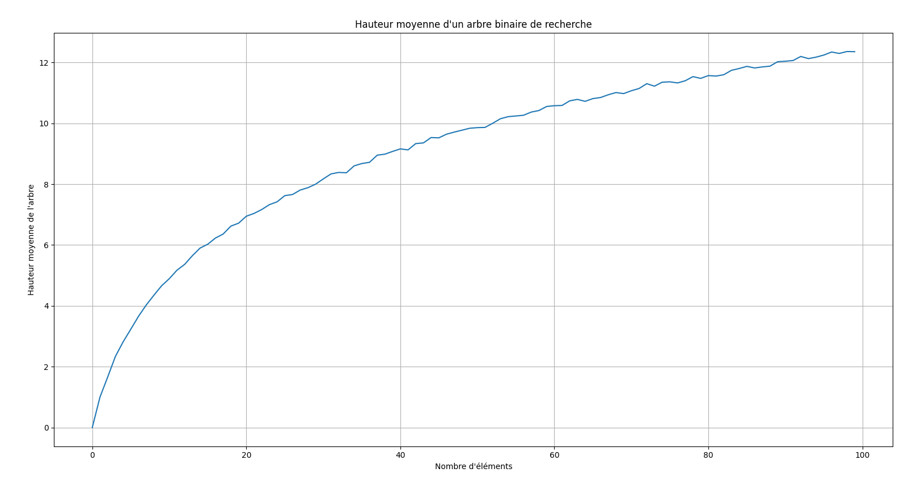

Arbres et arbres de recherche
Sommaire
- Arbres et arbres de recherche
- Sommaire
- Arbres
- Arbres binaires
- Arbres binaires de recherche
- Pour aller plus loin : Arbres AVL
- Sources
Arbres
Définition
Un arbre est une structure de données composée d'un ensemble de nœuds. Chaque nœud contient une valeur et un ensemble de références vers d'autres nœuds. Un nœud sans référence est appelé une feuille.
L'arbre est une structure récursive, chaque nœud peut être considéré comme la racine d'un sous-arbre.
Exemple
graph LR
A[8] --> B[9]
B --> C[15]
B --> D[4]
A --> E[6]
A --> F[9]
Implémentation
class Node:
def __init__(self, value : int, children : list[Node]):
self.value = value
self.children = children
def __str__(self):
return str(self.value)
def __repr__(self):
res = str(self.value)
for child in self.children:
res += " " + str(child)
return res
Propriétés
Hauteur
La hauteur d'un arbre est la longueur du chemin le plus long de la racine à une feuille. Un arbre vide a une hauteur de -1. (On peut aussi considérer qu'un arbre vide a une hauteur de 0). Un arbre avec un seul nœud a une hauteur de 0.
Exemple : L'arbre ci-dessus a une hauteur de 2.
Profondeur
La profondeur d'un nœud est la longueur du chemin le plus long de ce nœud à une feuille.
Exemple : Le nœud 4 a une profondeur de 1.
Arbres binaires
Définition
Un arbre binaire est un arbre dans lequel chaque nœud a au plus deux enfants.
Arbres binaires de recherche
Définition
Un arbre de recherche est un arbre binaire dans lequel chaque nœud a au plus deux enfants. De plus, la valeur de chaque nœud est supérieure ou égale à la valeur de tous les nœuds de son sous-arbre gauche et inférieure ou égale à la valeur de tous les nœuds de son sous-arbre droit.
Exemple
graph LR
A[10] --> B[5]
A --> C[15]
B --> D[3]
B --> E[7]
C --> F[12]
C --> G[17]
Implémentation
class Node:
def __init__(self, value : int, left : Node, right : Node):
self.value = value
self.left = left
self.right = right
def __str__(self):
return str(self.value)
def __repr__(self):
res = str(self.value)
if self.left is not None:
res += " " + str(self.left)
if self.right is not None:
res += " " + str(self.right)
return res
def insert(self, value : int):
if value < self.value:
if self.left is None:
self.left = Node(value, None, None)
else:
self.left.insert(value)
else:
if self.right is None:
self.right = Node(value, None, None)
else:
self.right.insert(value)
def search(self, value : int):
if value == self.value:
return True
elif value < self.value:
if self.left is None:
return False
else:
return self.left.search(value)
else:
if self.right is None:
return False
else:
return self.right.search(value)
Propriétés
Le principe de l'arbre de recherche est de pouvoir rechercher une valeur rapidement. Pour cela, on va comparer la valeur recherchée à la valeur du nœud courant. Si la valeur recherchée est inférieure à la valeur du nœud courant, on va chercher dans le sous-arbre gauche. Si la valeur recherchée est supérieure à la valeur du nœud courant, on va chercher dans le sous-arbre droit.
Le nombre de comparaisons est égal à la hauteur de l'arbre. Si l'arbre est équilibré, la hauteur est égale à log2(n) où n est le nombre de nœuds de l'arbre. La recherche est donc en O(log2(n)).
Arbre équilibré
Un arbre est équilibré si la différence de hauteur entre le sous-arbre gauche et le sous-arbre droit est inférieure ou égale à 1.
Arbre parfait
Un arbre est parfait si tous ses nœuds ont deux enfants et si toutes les feuilles sont à la même profondeur.
Arbre complet
Un arbre est complet si tous ses nœuds ont deux enfants et si toutes les feuilles sont à la même profondeur ou à une profondeur de moins.
Parcours
Il existe plusieurs façons de parcourir un arbre.
Parcours en largeur
On parcourt l'arbre en commençant par la racine puis en parcourant chaque niveau de gauche à droite.
def breadth_first_search(root : Node):
queue = [root]
while len(queue) > 0:
node = queue.pop(0)
print(node.value)
if node.left is not None:
queue.append(node.left)
if node.right is not None:
queue.append(node.right)
Parcours en profondeur
On parcourt l'arbre en commençant par la racine puis en parcourant chaque sous-arbre de gauche à droite.
Parcours préfixe
On affiche la valeur du nœud courant puis on parcourt le sous-arbre gauche puis le sous-arbre droit.
def depth_first_search_prefix(root : Node):
print(root.value)
if root.left is not None:
depth_first_search_prefix(root.left)
if root.right is not None:
depth_first_search_prefix(root.right)
Parcours infixe
On parcourt le sous-arbre gauche puis on affiche la valeur du nœud courant puis on parcourt le sous-arbre droit.
def depth_first_search_infix(root : Node):
if root.left is not None:
depth_first_search_infix(root.left)
print(root.value)
if root.right is not None:
depth_first_search_infix(root.right)
Parcours postfixe
On parcourt le sous-arbre gauche puis le sous-arbre droit puis on affiche la valeur du nœud courant.
def depth_first_search_postfix(root : Node):
if root.left is not None:
depth_first_search_postfix(root.left)
if root.right is not None:
depth_first_search_postfix(root.right)
print(root.value)
Complexité
La complexité d'un arbre de recherche dépend de sa hauteur. Si l'arbre est équilibré, la hauteur est égale à log2(n) où n est le nombre de nœuds de l'arbre. La recherche est donc en O(log2(n)). Dans le pire des cas, l'arbre est déséquilibré et la hauteur est égale à n. La recherche est donc en O(n).
Taille moyenne
La taille de l'arbre dépend de l'ordre d'insertion des valeurs. Dans le pire des cas, l'arbre est déséquilibré et la taille est égale à n. Dans le meilleur des cas, l'arbre est parfait et la taille est égale à 2^n - 1. La taille moyenne est égale à 1,44 * n.
Expérimentation
J'ai essayé de créer 1000 arbres de recherche contenant entre 1 et 100 valeurs aléatoires. J'ai ensuite calculé la hauteur moyenne de ces arbres. J'ai obtenu une hauteur moyenne tendant log2(n) où n est le nombre de valeurs dans l'arbre.

Le code est disponible ici.
Pour aller plus loin : Arbres AVL
Définition
Un arbre AVL est un arbre binaire de recherche équilibré. Pour cela, on va ajouter une information supplémentaire à chaque nœud : la hauteur de l'arbre. (AVL signifie Adelson-Velsky et Landis, les noms des inventeurs de cette structure de données).
Schema
graph LR
A[10] --> B[5]
A --> C[15]
B --> D[3]
B --> E[7]
C --> F[12]
C --> G[17]
Exemple
 (Source : Wikipedia)
(Source : Wikipedia)
Implémentation
class Node:
def __init__(self, value : int, left : Node, right : Node):
self.value = value
self.left = left
self.right = right
self.height = 0
def __str__(self):
return str(self.value)
def __repr__(self):
res = str(self.value)
if self.left is not None:
res += " " + str(self.left)
if self.right is not None:
res += " " + str(self.right)
return res
def insert(self, value : int):
if value < self.value:
if self.left is None:
self.left = Node(value, None, None)
else:
self.left.insert(value)
else:
if self.right is None:
self.right = Node(value, None, None)
else:
self.right.insert(value)
self.update_height()
def update_height(self):
left_height = -1
if self.left is not None:
left_height = self.left.height
right_height = -1
if self.right is not None:
right_height = self.right.height
self.height = max(left_height, right_height) + 1
def balance_factor(self):
left_height = -1
if self.left is not None:
left_height = self.left.height
right_height = -1
if self.right is not None:
right_height = self.right.height
return left_height - right_height
def rotate_left(self):
new_root = self.right
new_left_subtree = new_root.left
old_root = self
new_root.left = old_root
old_root.right = new_left_subtree
old_root.update_height()
new_root.update_height()
return new_root
def rotate_right(self):
new_root = self.left
new_right_subtree = new_root.right
old_root = self
new_root.right = old_root
old_root.left = new_right_subtree
old_root.update_height()
new_root.update_height()
return new_root
def rebalance(self):
if self.balance_factor() == -2:
if self.right.balance_factor() <= 0:
return self.rotate_left()
else:
self.right = self.right.rotate_right()
return self.rotate_left()
elif self.balance_factor() == 2:
if self.left.balance_factor() >= 0:
return self.rotate_right()
else:
self.left = self.left.rotate_left()
return self.rotate_right()
return self
def insert(self, value : int):
if value < self.value:
if self.left is None:
self.left = Node(value, None, None)
else:
self.left.insert(value)
else:
if self.right is None:
self.right = Node(value, None, None)
else:
self.right.insert(value)
self.update_height()
return self.rebalance()
def search(self, value : int):
if value == self.value:
return True
elif value < self.value:
if self.left is None:
return False
else:
return self.left.search(value)
else:
if self.right is None:
return False
else:
return self.right.search(value)
def min_value(self):
if self.left is None:
return self.value
else:
return self.left.min_value()
def delete(self, value : int):
if value < self.value:
if self.left is not None:
self.left = self.left.delete(value)
elif value > self.value:
if self.right is not None:
self.right = self.right.delete(value)
else:
if self.left is None:
return self.right
elif self.right is None:
return self.left
else:
self.value = self.right.min_value()
self.right = self.right.delete(self.value)
self.update_height()
return self.rebalance()
Propriétés
Un AVL a pour propriété d'être équilibré. Pour cela, on va utiliser une fonction de rééquilibrage qui va être appelée à chaque insertion ou suppression. Cette fonction va vérifier si l'arbre est équilibré et si ce n'est pas le cas, elle va effectuer une rotation pour rééquilibrer l'arbre.